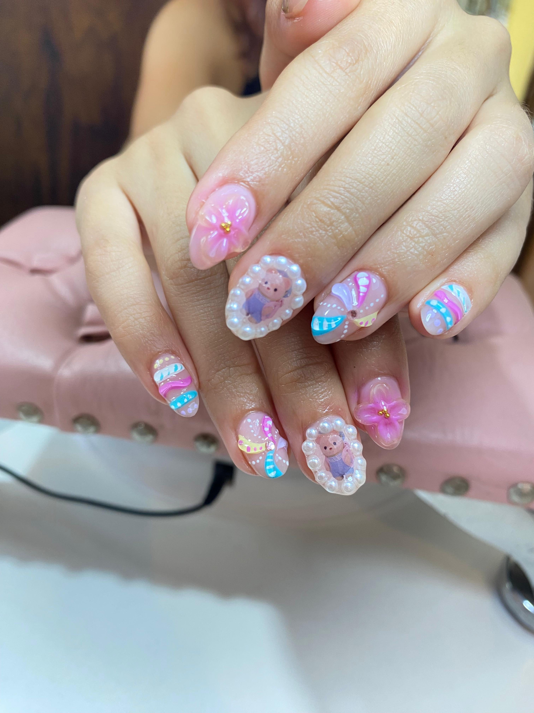
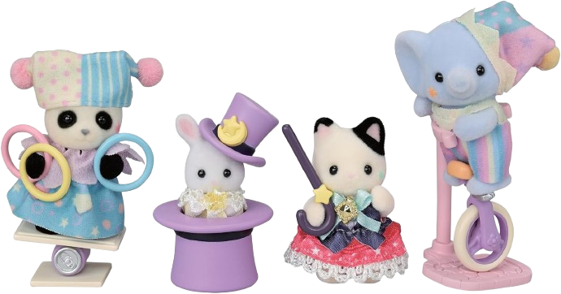

Sumérgete en un mundo de fantasía y ternura con estos diseños inspirados en los adorables Ternurines
Llevar la magia de estos personajes en tus uñas
es una manera perfecta de expresar tu estilo y
personalidad, transmitiendo dulzura y alegría en cada detalle.
La imagen muestra una propuesta encantadora en la que predominan los
tonos pastel, los detalles en relieve y las aplicaciones tridimensionales.
Cada uña es una pequeña obra de arte: flores 3D en tonos rosados, perlas que enmarcan a
los Ternurines y trazos suaves en azul, rosa y amarillo, que se mezclan armoniosamente para
dar un acabado delicado y sofisticado.
🧸 Los Ternurines, protagonistas del diseño
Aportando un toque de inocencia y simpatía, convirtiendo tus manos en el centro de todas las miradas.
Este tipo de nail art es ideal para quienes buscan algo diferente, creativo y cargado de significado.
Perfecto para ocasiones especiales o simplemente para consentirte y recordar que la dulzura puede estar
presente en los pequeños detalles del día a día. Atrévete a lucir la magia de los Ternurines en tus uñas
y deja que tu esencia brille con cada movimiento.
